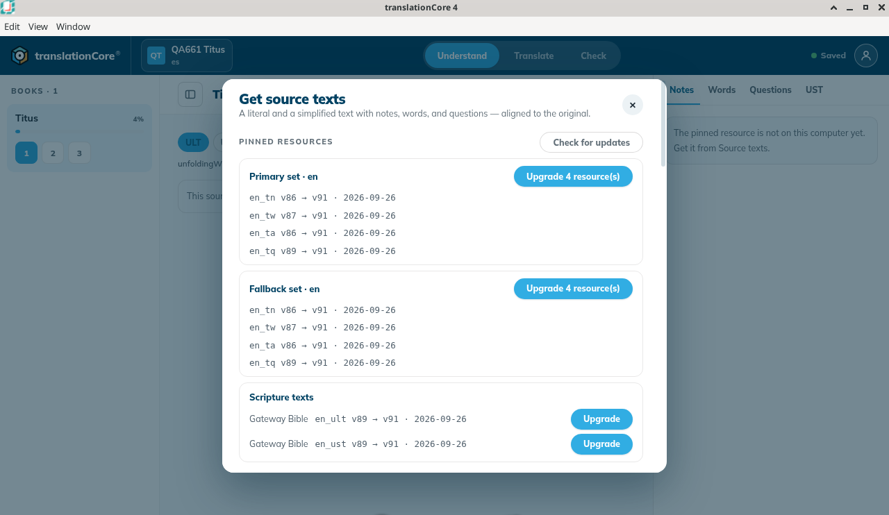
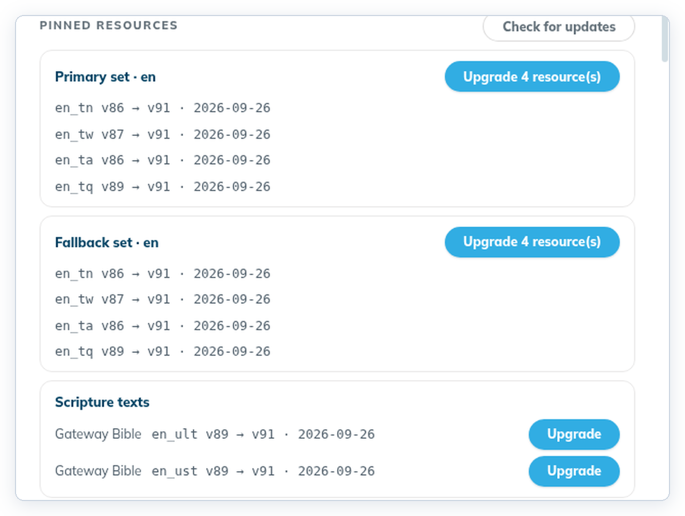
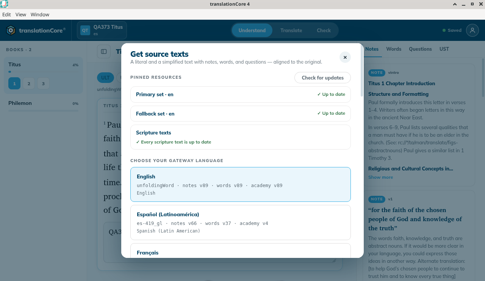

Update pinned helps
See which resource versions your project uses, and move to newer releases when you are ready.
Where in the app: Home › project card › Settings › Manage source texts → › Pinned resources › Check for updates
What it is
A project pins exact versions of its helps so checks stay stable. Updating is always your choice.
When to use it
When you want the latest notes and word articles, for example at the start of a new book.
Step by step
- On Home, click Settings on the project card. Project settings opens. (It is no longer in the top bar — issue #505.)
- Click Manage source texts →. The project opens, with Get source texts on top.
- If the dialog says the app is offline, click Go online.
- In Pinned resources, click Check for updates. If "Use the internet?" appears, click Continue. The button reads "Asking git.door43.org…", then each set shows ✓ Up to date or "Upgrade N resource(s)" with each move, for example
en_tn v86 → v91 · 2026-09-26. - If a set has updates, click "Upgrade N resource(s)".
- Read the confirmation. If nothing is checked yet, it says "Nothing you have already checked will be affected."
- Click Upgrade, or Keep the current release.
What you should see
- Pinned resources shows a Check for updates button. When the app is offline it says “The app is offline. Go online to check for updates.” and the button is disabled.
- After Check for updates each set (the primary set, and any fallback set) shows ✓ Up to date or an "Upgrade N resource(s)" button.
- The confirmation "Upgrade the {set}?" lists each move and says how many decisions are affected, with Keep the current release and Upgrade.
Screenshots

Screenshot comingGet source texts for Sample Titus (pins en_tn v86, en_tw v87, en_ta v86, en_tq v89) after Check for updates. Primary set · en and Fallback set · en each offer Upgrade 4 resource(s): en_tn v86 → v91, en_tw v87 → v91, en_ta v86 → v91, en_tq v89 → v91 · 2026-09-26. Scripture texts below.
img/rs-upgrade-helps-1.png
Screenshot comingThe upgrade confirmation with Keep the current release and Upgrade
img/rs-upgrade-helps-2.png
Screenshot comingSample Titus, made with this build, after Check for updates. Primary set · en ✓ Up to date, Fallback set · en ✓ Up to date, Scripture texts ✓ Every scripture text is up to date.
img/rs-upgrade-helps-3.pngTips
- "Decisions that match a check in the new release carry over. The rest stop applying, so those checks come back as work… Nothing is deleted."
- Known issue: Pinned resources does not list the versions your project uses until you check for updates, so offline you cannot see them there. The versions next to each language in the list below are the latest published releases, not your project's (for example "notes v89" while the project uses en_tn v86). To see the version a tool uses, look under the filters in that tool, for example "en_tn · v86".
- For a project that checks against English, the primary set and the fallback set are both English (Primary set · en, Fallback set · en), so the same upgrades are listed twice.
- A project that checks in another language has that language as the primary set and English as the fallback. "Equipo Ejemplo — Tito y Jonás" showed Primary set · es-419 ✓ Up to date and Fallback set · en "Upgrade 4 resource(s)".
- A new project made with build 79d3017 starts on the English v91 helps that come with the app, so both sets say ✓ Up to date.
- Projects imported from older work keep the versions they used (for example en_tn v86), and Check for updates offers the newer ones. Nothing changes until you click Upgrade.
Known limits
- Needs internet: "The app is offline. Go online to check for updates."
- tC4 does not check for updates automatically.